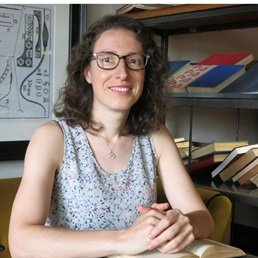
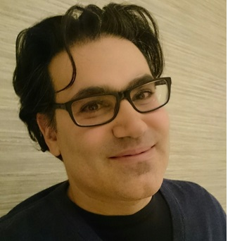
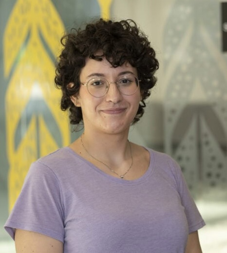
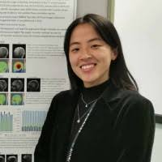
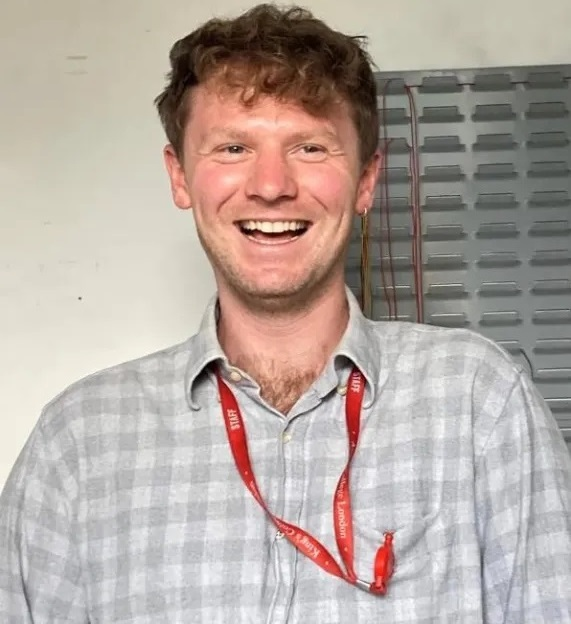

|
 |
Fani Deligianni
PhD, MSc, MSc, MEng
Senior Lecturer at School of Computing Science, Glasgow University

Christos Anagnostopoulos Reader, UoG
Paul Henderson Lecturer, UoG
Samuel Leighton Consultant Psychiatrist, NHS and ECR Fellow
Samuel Leighton Emeritus Profesor, University of Glasgow
Gruschen R Veldtman Consultant Cardiologist
Ng Pai Chet Lecturer, Singapore Institute of Technology
Dr. Nicole Lai Research Assistant
Dr. Xiao Gu Honorary Research Associate
Kaushik Bhargav Sivangi Research Assistant/PhD Student
Muhammad Ilham Rizqyawan PhD Student
Dominik Szczepaniak PhD Student
Shuruq Alshehri PhD Student
Tianyi Yu PhD Student

Antonella Maria Aurelia Marsella PhD Student

Yiling Hu PhD Student

Harry Clark PhD Student
Zain Hussain PhD Student
Dominik Szczepaniak - PhD thesis on Shaping and Evaluating Cognitive Training in Virtual Reality Using Artificial Intelligence Agents, to be submitted.
Nicole Lai-Tan - PhD thesis on Brain-Computer Interfaces to Personalise Rhythmic Interventions in Human Motion Analysis, 2026.
Idris Zakariyya - Cybersecurity Research Associate, Alan Turing Institute, 2025.
Qianying Liu - PhD thesis on Transformers and Contrastive Semi-Supervised Learning for Medical Image Segmentation, 2025.
Muhammet Alkan - PhD Thesis on Multi-modal machine learning framework for outcome prediction in congenital heart disease, 2025.
Narinder Kaur - PhD Thesis on Cardiovascular disease in Type 2 Diabetes Mellitus: A precision medicine approach applying artificial intelligence for heart failure and mortality prediction, 2025.
Francesco Dalla Serra - EngD Thesis on Models for Chest X-Ray Radiology, 2025.
Samuel Leighton - PhD Thesis on Prognostic research in psychiatry: towards a clinically-relevant prediction model for first episode psychosis, 2024
Yola Jones - Thesis on Use of Routinely Collected Health Data to Predict Sudden Death and Other Catastrophic Events using Machine Learning, 2023
Hester Huijsdens - Research Assistant, 2022
The effects of data augmentation techniques to improve fairness in computer vision models, Ivan I. Germanoff, 2025.
Synthetic Radar Data Generation From Video with Diffusion Models, Max MacDonald, MSci, 2025.
Privacy-Preserved Human Motion Analysis based on Radar Data, Linda Tran, MSci 2024.
Privacy Preservation in Human Motion Analysis, Boondirek Kanjanapongporn, 2024.
Human Motion Analysis - Exploration of Traditional Machine Learning and Deep Learning Based Anomaly Detection Algorithms, Titas Jonaitis, 2024.
Deep Learning Models for Classification of Real and Synthetic Human Motion, Kiril Mitkov Bikov, 2023.
Imputation Strategies for Risk Prediction Models Based on Electronic Health Records, Lee Lok Hang Toby, 2021-2022.
Development of Machine Learning Models to Detect Arrhythmia based on ECG data - Explainable Models, Hector J. Jones, 2021-2022.
Improving Explainability Using Expected Gradients for ECG Beat Classification, Anuraj Taya, 2021-2022.
Adversarial Attention for Human Motion Synthesis, Matthew Malek-Podjaski, MSci, 2021-2022.
Machine Learning Applications for the Detection and Disentanglement of Emotional States in Human Motion, 2020-2021, Matthew Malek-Podjaski. (This project is linked to Explainable, Privacy-Preserved Human Motion Analysis)
Development of Machine Learning Models to Detect Arrhythmia Based on ECG Data-Interpretability, 2020-2021, Shourya Verma.